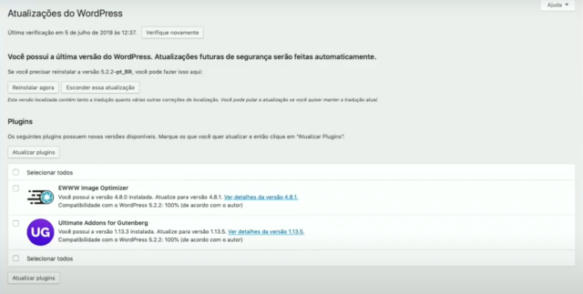
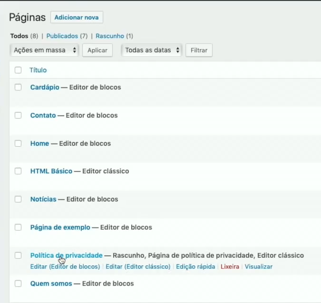
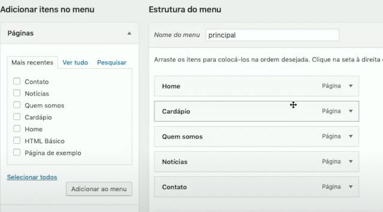

Dica Profissional
Sempre verifique atualizações de plugins no Painel do WordPress

Criando uma página
Vá até o Menu Página > Adicionar Página > Home(name) > Publique
Crie mais duas páginas: Cardápio; Contato; Home; Notícias; Quem somos

Menu
Para criar um menu vá até Aparência > Menus
Agora acesse: Aparência > Menus Configure o Menu Principal com os itens que você tem a esquerda.
